In dem Register "Ausprägungen" (normale Ansicht) werden die Ausprägungen des Hauptartikels tabellarisch untereinander aufgeführt.
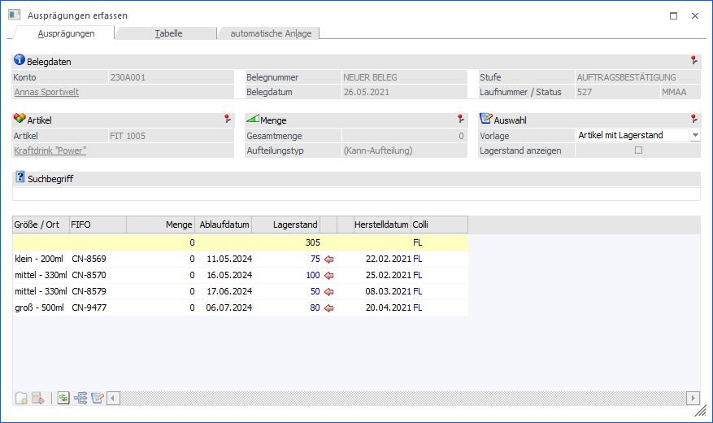
Belegdaten (nur in Belegerfassung)
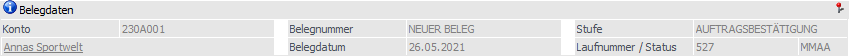
Wenn das Fenster "Ausprägungen erfassen" in der Belegerfassung geöffnet wird, so steht der Bereich "Belegdaten" zur Verfügung. Dort werden die relevanten Informationen, bezogen auf den aktuellen Beleg, dargestellt.
Artikel
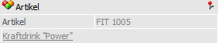
An dieser Stelle wird der auszuprägende Hauptartikel mit Nummer und Bezeichnung angezeigt.
Menge
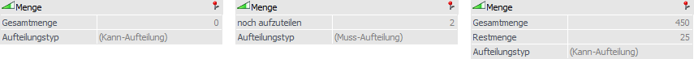
Ø Gesamtmenge / noch aufzuteilen / Restmenge
Abhängig vom Ausgangprogramm und dem Status der Erfassung wird hier die aktuell erfasste Gesamtmenge, die noch aufzuteilende Menge oder die Restmenge (WinLine PPS) ausgewiesen.
Ø Aufteilungstyp
An dieser Stelle wird der Aufteilungstyp dargestellt (Kann- oder Muss-Aufteilung), wobei die Grundeinstellung in den Aufteilungsoptionen (WinLine FAKT - Stammdaten - Ausprägungen - Aufteilungsoptionen) getroffen wird.
Auswahl
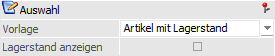
In diesem Bereich kann definiert werden, welche Informationen bzw. Ausprägungen grundsätzlich angezeigt werden sollen.
Ø Vorlage
Über die Vorlage werden folgende Elemente definiert:
ü Welche Ausprägungen werden in der Ausprägungstabelle angezeigt.
ü Welche Informationen werden in der Ausprägungstabelle aufgeführt.
ü Ist eine Neuanlage von Ausprägungen möglich.
ü In welchen Spalten wird durch Eingabe eines Suchbegriffs gesucht.
Die Definition der Vorlagen findet in dem Programm "Ausprägungen initialisieren" (WinLine FAKT - Stammdaten - Ausprägungen - Ausprägungen initialisieren - Register "Vorlagen") statt. An dieser Stelle kann zusätzlich eingestellt werden, wann welche Vorlage genutzt werden soll.
Hinweis
Die Zuordnung kann auch über das Programm "Ausprägungsoptionen" (WinLine FAKT - Stammdaten - Ausprägungen - Ausprägungsoptionen) vorgenommen werden.
Ø Lagerstand anzeigen
Diese Option steht nur in dem Register "Tabelle" zur Verfügung.
Suchbegriff
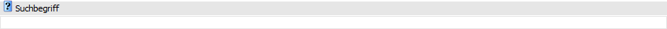
Ø Suchbegriff
An dieser Stelle kann durch die Eingabe eines Suchbegriffs nach Ausprägungen gesucht werden. Hierbei wird bereits durch die Eingabe eines Buchstabens / einer Zahl direkt das Ergebnis innerhalb der Ausprägungstabelle eingeschränkt (d.h. es findet eine Direktsuche statt). Sobald in der Tabelle nur noch eine Ausprägung erscheint, so wird der Fokus automatisch auf das Feld "Menge" gelegt.
Hinweis
In welchen Spalten nach dem Suchbegriff gesucht werden soll, wird grundsätzlich über die Vorlage definiert. Dieses kann temporär über das Kontextmenü der rechten Maustaste (Spalte "xxx" bei der Suche berücksichtigen / Spalte "xxx" bei der Suche nicht berücksichtigen) beeinflusst werden.
Hinweis zum Speicherverhalten
Wenn in dem Feld "Suchbegriff" eine Eingabe getätigt wurde und die anschließend eingegebene Menge gespeichert werden soll, dann bewirkt das Drücken des Buttons "Ok" bzw. der Taste F5 eine Zwischenspeicherung. D.h. die Menge wird zwischengespeichert, das Feld "Suchbegriff" geleert und der Fokus wird wieder auf dieses gelegt.
Sobald das Feld "Suchbegriff" leer ist und ein Speichern durchgeführt wird, schließt sich das Fenster "Ausprägungen erfassen" und alle bis dahin getätigten Eingaben werden übernommen.
Tabelle "Ausprägungen"
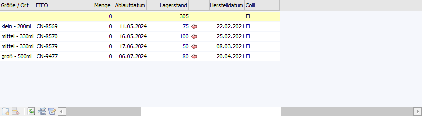
In der Tabelle "Ausprägungen" werden alle Ausprägungen gemäß der verwendeten Vorlage angezeigt. Welche Spalten dabei dargestellt werden ist, neben der Vorlage, auch abhängig vom Ausprägungstyp des Hauptartikels (Artikel mit einer Ausprägung, Artikel mit zwei Ausprägungen, etc.).
Hinweis
Spalten können jederzeit über das Kontextmenü der rechten Maustaste (Funktion "Spalten anzeigen / verstecken") hinzugefügt bzw. entfernt werden (z.B. Preis, Rabatt1, Rabatt2, etc.). Eine genau Auflistung und Erklärung der Spalten entnehmen Sie bitte dem Kapitel Ausprägungen erfassen - Register "Ausprägungen" (erweiterte Ansicht).
Ø Ausprägung 1 / Ausprägung 2 / Chargennummer / Identnummer
In diesen Spalten wird die Bezeichnung der Ausprägung bzw. die entsprechende Nummer (bei Chargen- und Identnummernartikeln) angezeigt.
Ø Menge
An dieser Stelle wird die benötigte Menge hinterlegt.
Hinweis
Bei "inaktiven" oder nicht "freigegebenen" (Zahl "0" wird in Rot dargestellt) Ausprägungen ist eine Mengeneingabe nicht möglich.
Hinweis 2
Folgende Punkte werden bei der Eingabe der Menge geprüft:
ü Belegerfassung
ü Liefersperre (lt. Einstellung in den Belegoptionen)
ü Verfügbare Menge in der Stufe "2 - Auftrag" (lt. Einstellung in der Belegart)
ü Lagerstandsunterschreitung ab der Stufe "3 - Lieferschein" (lt. Einstellung in der Belegart)
ü Allgemein
ü Mehrfachausprägung erlaubt (lt. Einstellung im Artikelstamm)
ü Menge bei Identnummernartikeln darf nur "1" oder "-1" betragen
ü Lagerstand bei Identnummernartikeln darf nach der Buchung nur "1", "0" oder "-1" betragen
Ø Ablaufdatum
Handelt es sich um einen Chargenartikel, so wird an dieser Stelle das Ablaufdatum der Charge angezeigt bzw. kann bei einer Neuanlage hinterlegt werden.
Ø Lagerstand
In dieser Spalte wird der aktuelle Lagerstand ausgewiesen.
Ø verf. Menge
Abhängig von der verwendeten Vorlage und der dortigen Option "verf. Menge anzeigen" (Auswahl "1 - anzeigen") wird in der Spalte "verf. Menge" der noch verfügbare Lagerstand angezeigt.
Hinweis - Datum
Je nach Programm, über welches in das "Ausprägungen erfassen" gewechselt wurde, wird zur Berechnung der verfügbaren Menge ein anderes Datum genutzt:
ü Belegerfassung: Lieferdatum aus dem Register "Mitte" der Belegerfassung"
ü Kundenbestellungen bearbeiten: Lieferdatum aus dem Register "Mitte" der Belegerfassung"
ü Lieferantenlieferungen aufteilen: Lieferdatum aus dem Register "Mitte" der Belegerfassung"
ü Inventur, Lagerbuchhaltung: Aktuelles Tagesdatum
ü Produktionskorrektur: Produktionsdatum
ü Produktionsendmeldung: Produktionsdatum
Hinweis - Lagerorte
Handelt es sich um einen Verkaufsbeleg, so kann bei Lagerortartikeln der Bestand von nicht verfügbaren Orten ebenfalls bei der Berechnung der verfügbaren Menge berücksichtigt werden. Grundvoraussetzung hierfür ist, dass in der Belegart (Register "Optionen") bei der Einstellung "Unterschreiten der verfügbaren Menge" die Auswahl "3 - erlaubt mit Warnung inkl. Lagerorte" oder "4 - nicht erlaubt inkl. Lagerorte" getroffen wurde.
Ø Beleginfo
Abhängig von der verwendeten Vorlage und der dortigen Option "verf. Menge anzeigen" (Auswahl "2 - inkl. Beleginfo anzeigen") wird in dieser Spalte jener Auftrag (Verkauf oder Produktion) ausgewiesen, welcher die Bestandsveränderung auslösen wird.
Hinweis
Sollten mehrere Aufträge für die zukünftige Bestandsveränderung verantwortlich sein, so wird anstatt einer Auftragsnummer der Hinweis <Aufträge> dargestellt. Durch Anwahl dieser Info wird die Artikelbedarfsvorschau geöffnet.
Ø standardmäßige Spalten nach "Lagerstand"
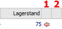
ü 1 - Lagerstand übernehmen
Durch einen Doppelklick auf den Button "Lagerstand übernehmen" kann der aktuelle Lagerstand der Ausprägung in das Feld "Menge" übernommen werden.
ü 2 - Artikel suchen
Wenn laut Vorlage eingestellt wurde, dass die Ausprägungstabelle nicht automatisch gefüllt werden soll, dann können grundsätzlich nur "neue" Ausprägungszeilen erfasst werden (werden in "grün" beschriftet). Nach der Erfassung solch einer neuen Zeilen kann per Doppelklick auf den Button "Artikel suchen" geprüft werden, ob die Ausprägung bereits existiert.
Hinweis
Wenn bei der Prüfung eine passende Ausprägung gefunden wird, dann erscheint unter "Lagerstand übernehmen" das Symbol und das Symbol wird entfernt.
Ø Ablaufdatum
Handelt es sich um einen Chargenartikel, so wird an dieser Stelle das Ablaufdatum der Charge angezeigt bzw. kann bei einer Neuanlage hinterlegt werden.
Ø Colli
An dieser Stelle wird der Colli des Artikels dargestellt und kann geändert werden.
Tabellenbuttons
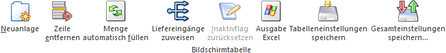
Ø Neuanlage
Nach dem Drücken des Buttons "Neuanlage" wird in eine leere Ausprägungszeile gewechselt und es kann eine neue Ausprägung erfasst werden.
Hinweis
Der Button ist nicht anwählbar, wenn eine Neuanlage laut der verwendeten Vorlage nicht gestattet wird.
Achtung
Um eine neue Ausprägung zu erfassen, muss die Ausprägungskurzbezeichnung (auch "Kurzcode" oder "Kennzahl" genannt) für Ausprägung 1 und / oder Ausprägung 2 als Spalte in der Tabelle zur Verfügung stehen, wenn solche Ausprägungen erfasst werden sollen.
ü Ausprägung existiert im
"Ausprägungen verwalten" noch nicht
Wenn eine Ausprägungskurzbezeichnung
verwendet wird, welche im "Ausprägungen verwalten" (WinLine FAKT - Stammdaten -
Ausprägungen - Ausprägungen verwalten) noch nicht angelegt wurde, dann erscheint
folgende Meldung:
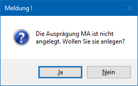
ü Ausprägung liegt nicht im
definierten Ausprägungsbereich des Hauptartikels
Wenn eine
Ausprägungskurzbezeichnung gewählt wird, welche im "Ausprägungen verwalten"
existiert, aber außerhalb des definierten Ausprägungsbereichs vom Hauptartikel
liegt, dann erscheint folgende Meldung:
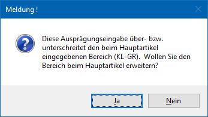
Ø Zeile entfernen
Der Button "Zeile entfernen" steht nur für neue Ausprägungszeilen zur Verfügung und löscht die gerade markierte Zeile heraus.
Ø Menge automatisch füllen (nur in Belegerfassung und WinLine PPS)
Mittels dieses Buttons ist es möglich, eine aufzuteilende Menge automatisch aufteilen zu lassen (nähere Informationen entnehmen Sie bitte dem Kapitel Ausprägungen erfassen - Sonderfunktionen in der Belegerfassung).
Ø Liefereingänge zuweisen (nur in Belegerfassung)
Bei Eingangsbelegen (Lieferantenlieferschein und -faktura) besteht die Möglichkeit die Liefermenge nur auf den Hauptartikel zu buchen. Im Zuge des Verkaufes kann mit Hilfe des Buttons "Liefereingänge zuweisen" auf diese Zubuchungen verwiesen werden sobald neue Ausprägungen angelegt werden (nähere Informationen entnehmen Sie bitte dem Kapitel Ausprägungen erfassen - Sonderfunktionen in der Belegerfassung).
Ø Inaktivflag zurücksetzen
Mit dem Button "Inaktivflag zurücksetzen" können inaktive Chargen- und Identnummernartikel wieder aktiviert werden. Dementsprechend steht die Funktion nur zur Verfügung, wenn…
ü … im Fenster "Ausprägungen erfassen" Chargen- oder Identnummernartikel angezeigt werden und …
ü … die Option "inaktive anzeigen" in der verwendeten Vorlage aktiviert ist.
Bei der Anwahl des Buttons erscheint folgende Meldung:
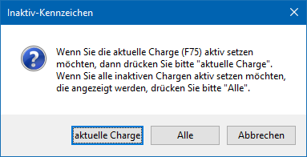
ü aktuelle Identnr. / aktuelle
Charge
Es wird nur die aktuell angewählte Charge / Identnummer wieder
aktiviert.
ü Alle
Es werden alle Chargen /
Identnummern des Artikels wieder aktiviert.
ü Abbrechen
Es wird keine Charge
/ Identnummer aktiviert.